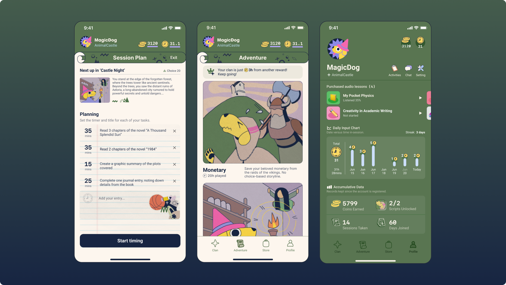
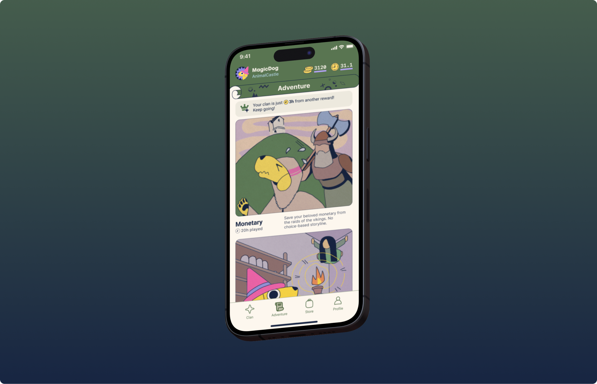

Adventurer's Scroll
A gamified productivity app that builds intrinsic motivation and transforms studying into an endless personalized adventure.
Back
Overview
-
Role
Visual & product designer
-
Timeline
April 2020 - December 2023
-
Audience
Middle school students (ages ~11–14)
-
Tools
Figma, Procreate
Problem
-
Students are often driven by external pressure rather than curiosity to learn.
Middle school students often learn under parental pressure, grading systems, and standardized benchmarks, leading to compliance as opposed to curiosity.
-
High anxiety → lower sense of agency.
Middle school students often learn under parental pressure, grading systems, and standardized benchmarks, leading to compliance as opposed to curiosity.
-
Major productivity tools rely on discipline over engagement.
Most tools (Notion, Todoist, etc.) are designed for adults, relying on discipline over engagement. Their lack of imagination and reward loops misaligns with how Gen Z actually engages with the world, which is through storytelling, games, and social connections.
Research question
What if studying felt like progressing through a story instead of completing tasks?
Product highlights
Focus session + story progression loop
The user begins by setting up a checklist of tasks which they would execute in a Pomodoro-style focus session. With each task complete, they unlock a new segment of their story and are prompted to make a choice that determines how the narrative unfolds.
AI-based branching narrative system
The story itself is dynamically generated through AI, adapting to the choices users make. By continuously prompting the question “What happens next?”, the experience builds anticipation and encourages sustained engagement, allowing students to feel a sense of accomplishment in real time.
Reward economy
Users can earn coins through completed focus sessions, which can be exchanged for additional “script slots” and educational audio content.
Build momentum through peer-supported micro groups.
To introduce a social dimension without creating pressure, students can form small groups of up to four people, where they work toward shared weekly goals and unlock collective rewards.
UI design
.png)

Design system